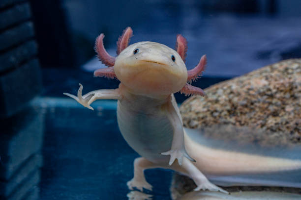
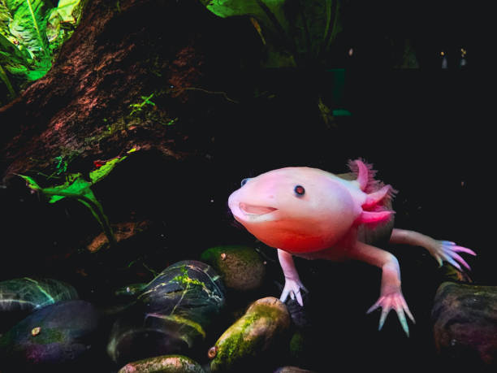
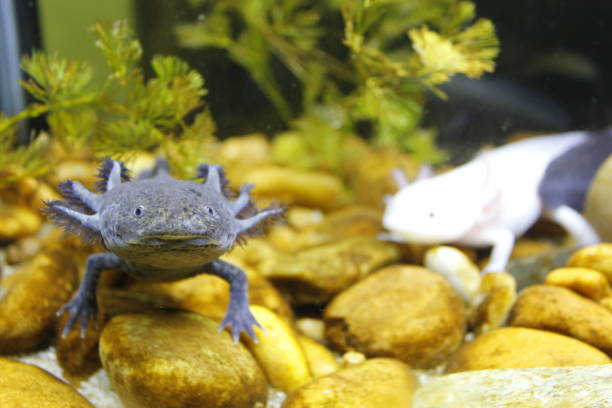
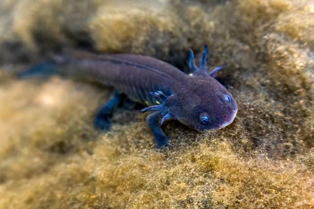
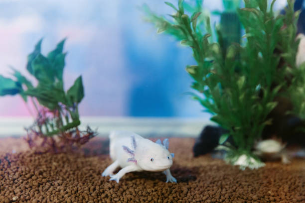
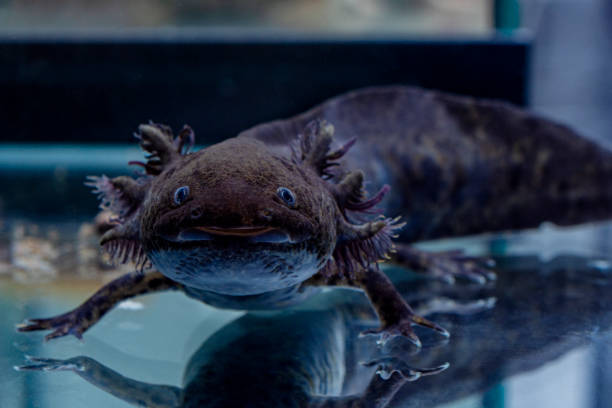

📷 Tips memotret axolotl: matikan blitz dan jangan pakai lampu terang. Axolotl tidak punya kelopak mata, jadi cahaya kuat membuatnya tidak nyaman. Foto dari samping akuarium dengan cahaya lembut hasilnya lebih cantik.